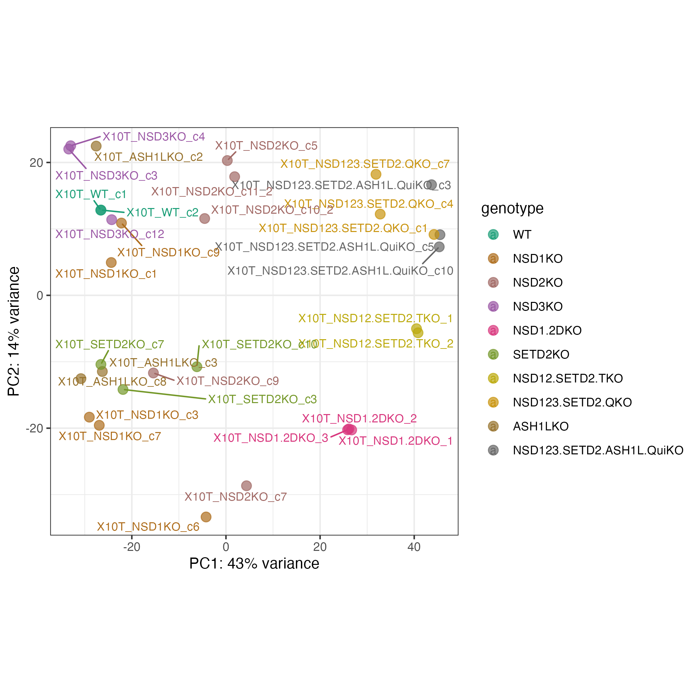

10T RNA-seq data analysis 🔗
- raw data path:
/project/6007495/shareroot/projects/cell_lines/10Ts/RNAseq/local
1. Alignemnt-based quantification 🔗
1.1 Methods and tools 🔗
- aligner: STAR
- quantificaiton: TEcount from TEtranscript
- reference: mm39, mm39.gencode.vM33.annotation.gtf, repeatmasker track from https://labshare.cshl.edu/shares/mhammelllab/www-data/TEtranscripts/TE_GTF/
1.2 DE analysis 🔗
- genes/TEs with raw count <= 10 in half of the smaples were filtered
- contrast design:
~genotypeKOs vs WT
1.2.1 Sample clustering 🔗
